Сложное тролль-обби про картошку: 30 уровней-экранов, 2D платформер на движке o2. Ветка
games/potato_obby/main, рабочее дерево gamesTemplate3.
api_key.txt и присланный)
отвечают 402 «prepayment credits are depleted». Спрайты нарисованы скриптом
Tools/PotatoObby/make_placeholder_art.py; после пополнения баланса их заменяет
python3 Tools/PotatoObby/art_prompts.py (те же имена и размеры файлов).main, чтобы не трогать незакоммиченный WordFall;
вложенные подмодули o2 (boost, tracy, quickjs…) пришлось инициализировать рекурсивно — первая конфигурация упала.@SCRIPTABLE у Input/Scene),
поэтому ядро на C++: ObbyLevel (модель), ObbyWorld (симуляция без сцены), ObbyGameComponent (сцена, HUD, меню, ввод),
ObbySceneFactory. Контент — JSON-ассет Assets/PotatoObby/levels.json.Tools/PotatoObby/build_levels.py: 16 типов тайлов (фальшивые, невидимые, мимики, мигающие,
пугливые блоки, вилки, платформы, батуты, конвейеры, переворот гравитации, настоящие и фальшивые чекпоинты и мешки, убегающий мешок)
и флаги уровня (зеркало, низкая гравитация, падающий старт, темнота). Подсказки на старте иногда врут.| Проблема | Решение |
|---|---|
CodeTool ломается на enum class Tile : char | Убрать базовый тип перечисления |
DEFAULT_VALUE("...") для String не компилируется | Инициализатор поля String("...") — CodeTool копирует его в META |
Камера из mmake<CameraActor>() не рисует: регистрируется из конструктора базового Actor | Фабрика прогоняет сцену через DataDocument (как загрузка из файла) |
Дети с NotInScene + AddChild не попадают в сцену | Создавать акторы в режиме по умолчанию |
Scene::FindActorByType — заглушка | Искать по имени |
| Кадры тест-драйвера почти не двигают игровое время | В UI-тестах AppTestDriver::Wait(sec) |
| HUD и тач-кнопки перекрывали нижний ряд уровня | Камера 1280×900: уровень в центре, полосы HUD сверху и снизу |
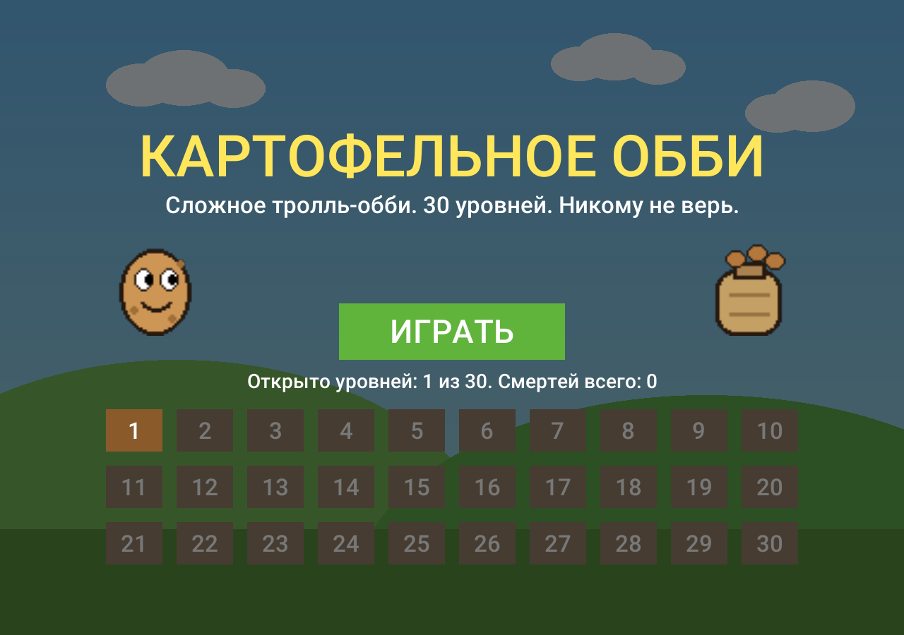
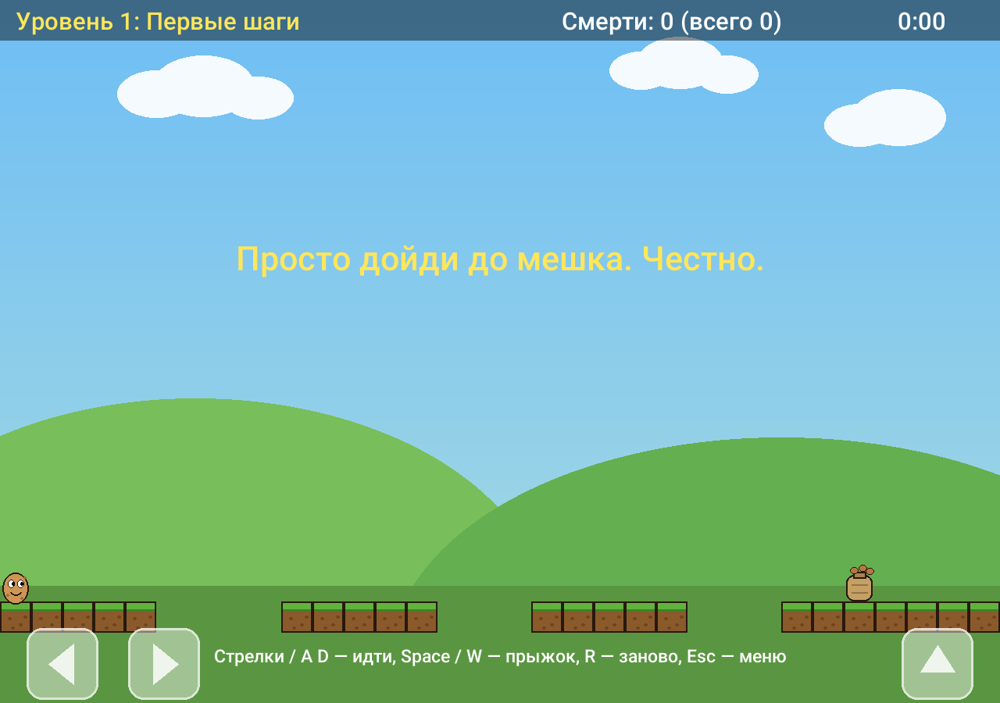
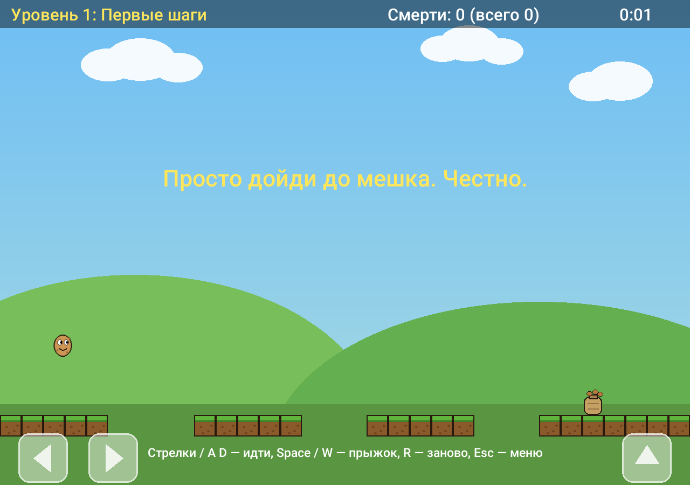
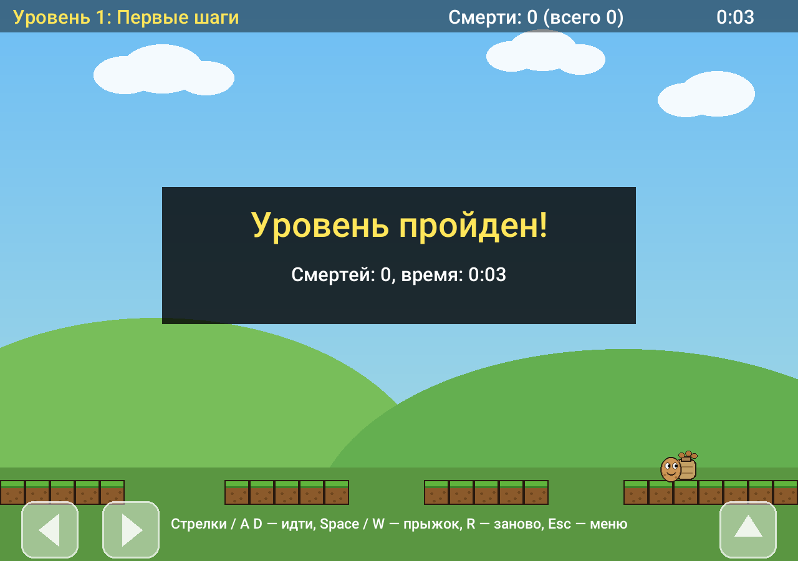
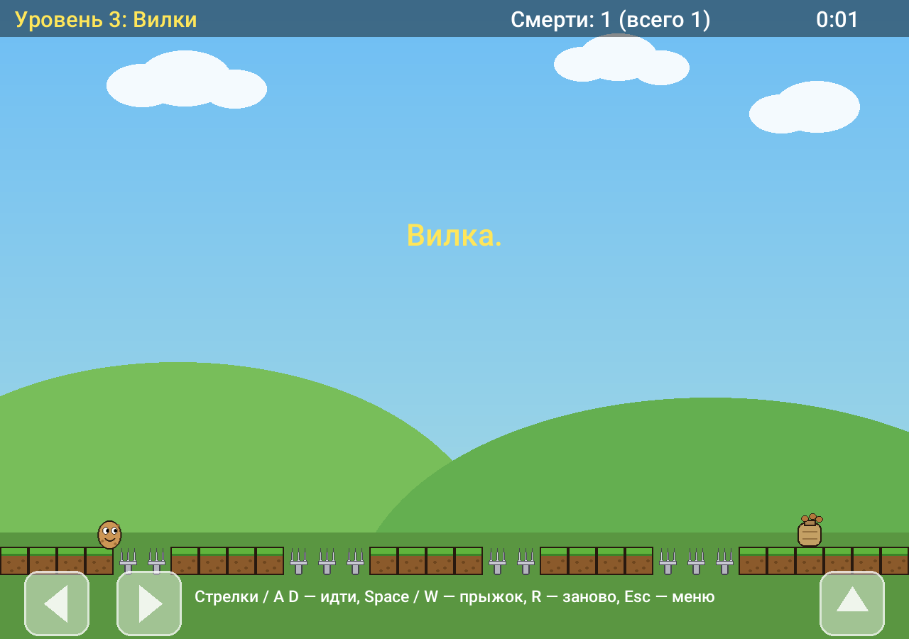
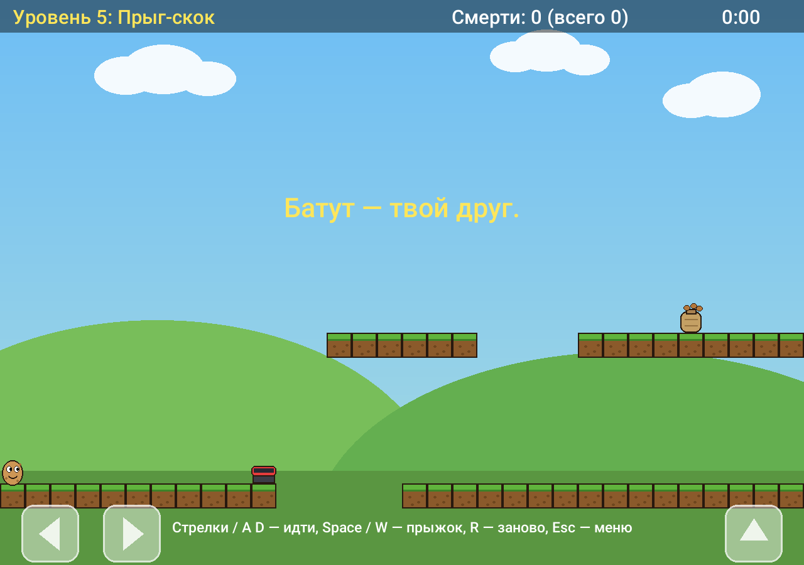
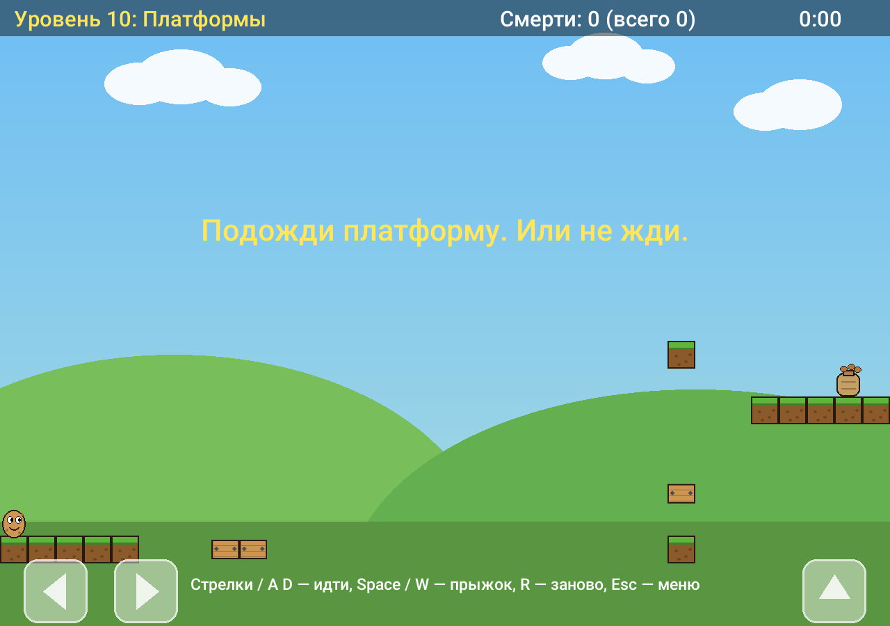
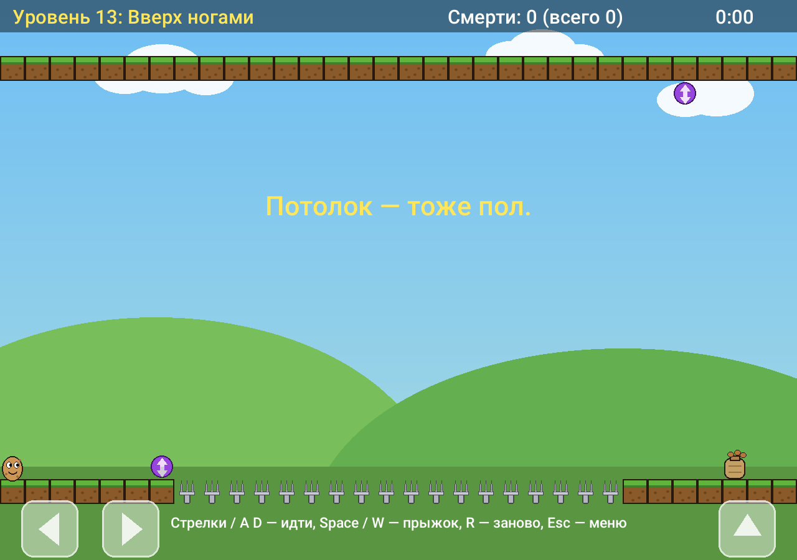
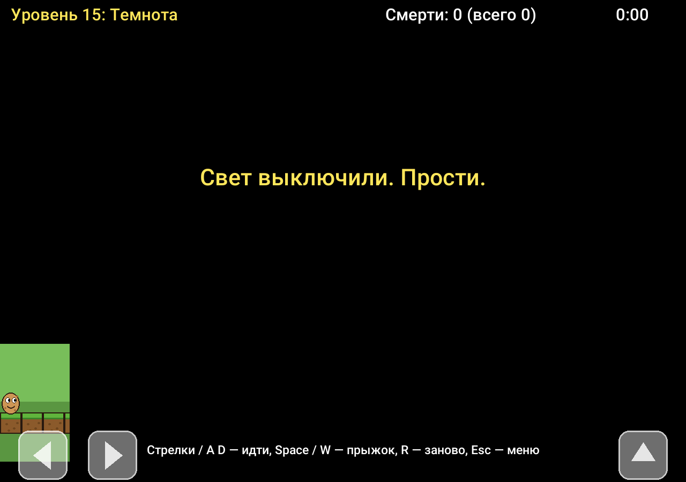
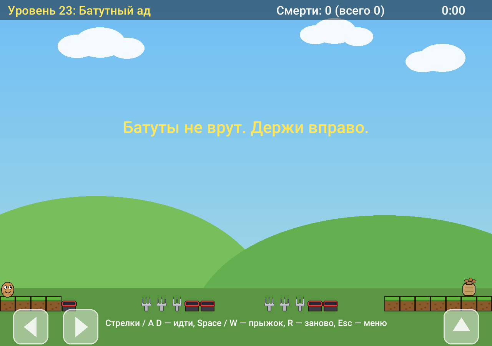
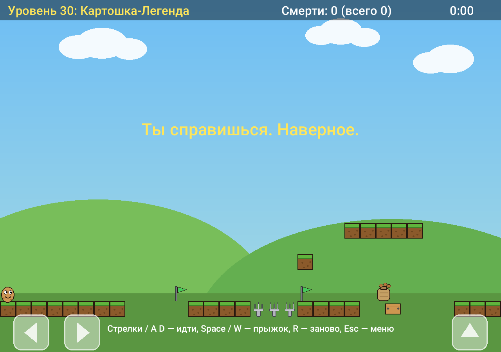
art_prompts.py), добавить анимации героя и звуки.python3 ../tools/games_pipeline.py deploy --repo gamesTemplate3 --platforms web после регистрации ветки в пайплайне.